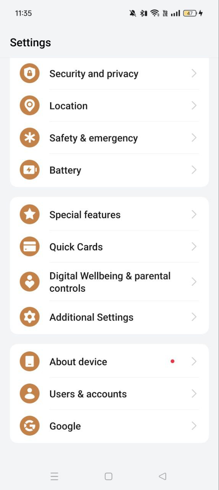
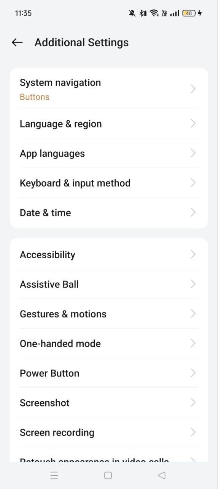
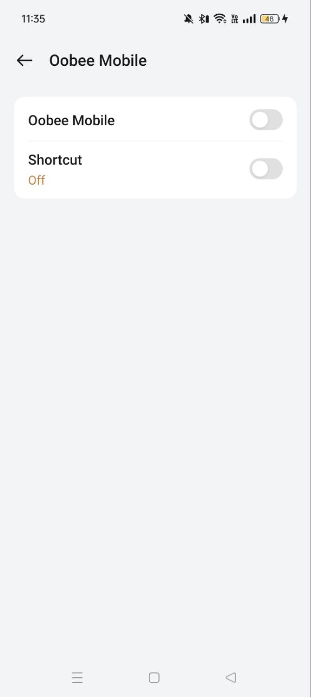
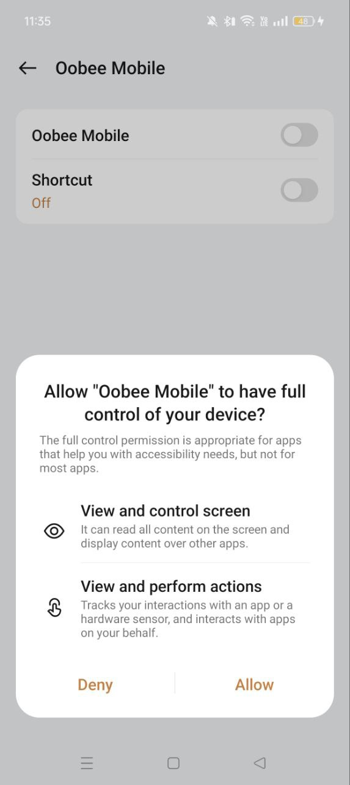

Step 1: Go to Settings > Scroll down to Additional Settings
Step 2: Click on Accessibility
Step 3: Click on the Downloaded apps under More

Step 4: Click on the Oobee Mobile button

Step 5: Enable the toggle beside of Oobee Mobile
Step 6: Click “Allow” in the security prompt
Step 7: Oobee Mobile security prompt is approved